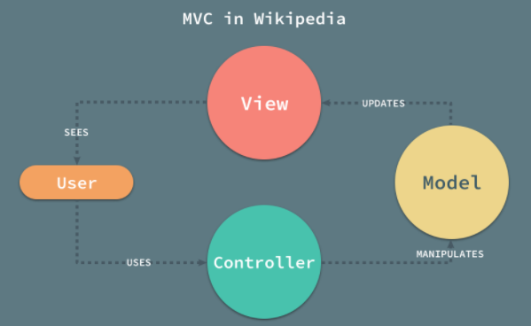
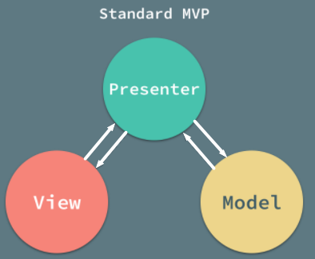
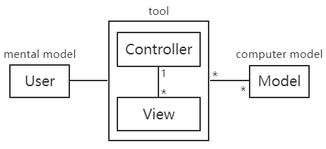
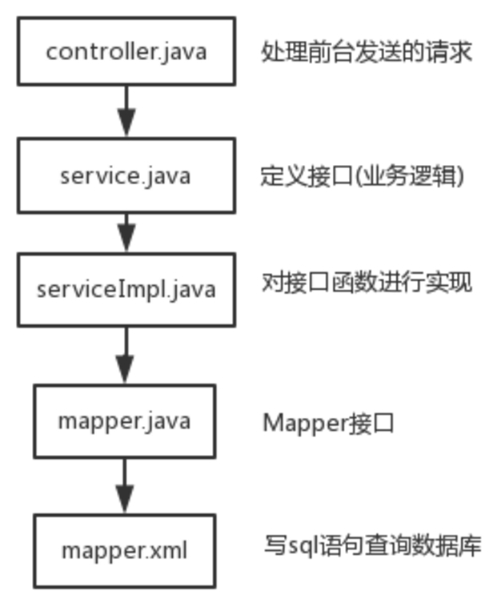

MVC与三层架构没有关系，它们之间并不对应
MVX架构模式
MVC=>MVP=>MVVM
MVC
MVC并定义最不明确，也没有一个标准的架构图，每个人对它的理解都不太一样，不同的技术实现也有不同的细节差异
目前可以总结的共同点有：
将整个应用分成Model、View和Controller三个部分，它们都有一定的职责
- Model：数据模型，管理应用的数据（和行为）
- View：视图，展示数据，代表用户界面
- Controller：作用于模型和视图，接受用户的输入并调用模型和视图去完成用户的需求（应用程序逻辑）
三者之间的关系却有多种说法，一种参考架构是维基百科指出的架构，如图
四个箭头分别表示：视图被用户看到，用户使用控制器，控制器操作模型，模型更新视图
Controller：
View中用户进行操作，通知给Controller要让Model进行数据更新（可能是发起请求，可能是Controller直接修改Model）
它控制数据流向模型对象，并在数据变化时更新视图。它使视图与模型分离开
并没有定死的规矩，比如业务逻辑可以放在Model中和数据封装成对象（较为合适一点），但也可以合并到Controller中，也可以从Model中抽出来分成ORM层和Service层
MVP
定义略微清楚一些，但还是有一些争议
可以确定的是，MVP主要使用Presenter对视图和模型进行了解耦
也有人说对比MVC的改进是将数据返回给Controller，让Controller来控制View的渲染
最终被广泛接受的定义如图
很多框架都自称遵循 MVC 架构模式，但是它们实际上却实现了 MVP 模式，一部分人认为MVC也是Controller对视图和模型进行了解耦的，如图

MVVM
定义比较清晰，架构基本上与MVP一致
MVVM是MVP的衍生，改进是实现了View和Model的状态同步/数据绑定（Vue和angular是双向绑定，React是单向数据流）
实例
早期MVC
设计的目的是在人的mental model与计算机computer model之间建立一个桥梁，MVC 能够解决这一问题并为用户提供直接看到信息和操作信息的功能，如图
ASP.NET MVC
- 控制器负责管理视图和模型；
- 视图负责展示模型中的内容；
node（后端）里的MVC
M，model，处理数据的CRUD
V，视图层view，前端页面
C，业务逻辑层，路由分发+业务代码
前端中的MVVM
MVVM是前端视图view层中的概念
M，每个页面中单独的数据（需要渲染的数据）
V，HTML结构（数据渲染到的地方）
VM，ViewModel，M和V之间的调度者，分隔了M和V使其互不可见，只能M->VM->V获取或V->VM->M保存
通过VM提供了数据的双向绑定，简化开发
二者不同
表示层的model中是页面视图上的数据，也就是经过业务层处理后的最终数据；而持久层中的model则是对应着数据库的每一张表。表示层的model相当于是有持久层的model多表查询后的结果；理解为数据库中表和视图的关系
Vue里的MVVM
Vue实例所控制挂载的区域，是V
new出来的Vue实例，就是VM
Vue实例中的data是M
SpringMVC中的MVC
通过 DispatchServlet 将控制器层和视图层完全解耦
视图层和模型层之间没有直接关系，只有间接关系，通过控制器对模型进行查询、返回给 DispatchServlet 后再传递至视图层；
三层架构
- 表现层UI，Web层：（顶层）负责用户界面的显示，并且负责帮助用户向业务层提交业务逻辑处理请求，通常还负责将业务层发来的处理结果显示到界面中
- 业务逻辑层BLL，service层：（中间层）负责处理业务逻辑，它可以根据不同的业务来调用不同的代码来处理
- 数据访问层DAL，持久层（与DAO层混用）：（底层）负责向一个或多个数据库中读取或写入数据。通常用来给业务层的业务逻辑处理提供数据。这个层次通常必须包括业务实体模型
从整个应用程序架构的角度来分的三层，可以应用于任何语言、任何技术的应用程序
架构模式和框架
平台Platform——\——应用级复用——\——
架构、构架、体系结构Architecture——建筑蓝图——系统级复用——系统的抽象
框架Framework——骨架，已成型的方法——代码的模块级复用——一套解决方案
设计模式Pattern——通用的设计——设计的复用——方法论
架构模式和架构风格有一丝丝区别（也可以忽略不记），架构模式侧重于面对某类反复问题而提炼的方案
框架是架构模式的具体实现
表示层主要的架构模式是MVC，SpringMVC是其具体实现（SpringMVC是Web框架，是表现层框架）
业务层主要的架构模式有事务脚本模式、领域模型模式、CQRS
AOP和IOC也是架构模式，对应Spring框架?
持久层的架构模式有入口模式、数据映射器模式等，MyBatis框架是数据映射器模式的具体实现，
Angular框架是MVC架构模式的实现
一些暴论
Vue只关注视图层（是前端概念，MVC是后端概念）
前端工作主要负责MVC中的View层
传统的Model层在SpringMVC中被拆分成了业务层和数据访问层
Web层（SpringMVC），业务层（Java），数据访问层（Mybatis 或者JPA 等）
持久化指的是把数据长期保存在文件、磁盘里。
DAO层和DAL层经常混指的是一个意思
Controller、Service、DAO等
- Controller，控制器，控制逻辑，完成Service业务的调用和跳转的管理，控制业务的流程
- Service，服务，业务逻辑，只完成业务功能的实现
- Dao，数据存取对象，只关心数据的CRUD(创建、读取、更新、删除)，与数据库进行数据交互
除了controller、service、dao，还有mapper、view、model/entity层这些说法
model=entity
dao、mapper都是DAO层，二者差不多，mapper特指映射，相关的还有@Repository
Controller像是服务员，顾客点什么菜，菜上给几号桌，都是ta的职责；Service是厨师，action送来的菜单上的菜全是ta做的；Dao是厨房的小工，和原材料打交道的事情全是ta管。相互关系是，小工(dao)的工作是要满足厨师(service)的要求，厨师要满足服务员(controller)转达的客户（view）的要求，服务员自然就是为客户服务喽。
代码中经常要和数据库交互，如果为每个场景写sql语句，代码则非常乱。为了让代码整洁于是有了解决方案，将数据库持久化封装为一个对象，与数据库的交互改成看上去是和对象的交互，这个对象就是数据存取对象。当操作DAO时，DAO会自动生成sql语句。
服务，需要独立完成一定的工作，有高度的抽象性。例如数据库服务、缓存服务、文件存储服务、身份验证服务、消息队列服务等
DAL、DAO与ORM
DAO针对分层结构，很多Java程序都有DAO层
ORM针对开发方式
DAO层实现时可以使用ORM框架，也可以使用JDBC等对数据库直接进行操作
DAL层由许多DAO组成，或者说由DAO具体实现